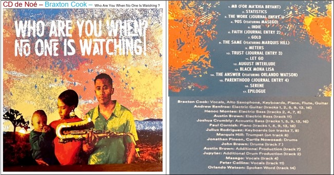

CD de Noe - Braxton Cook - Who Are You When No One Is Watching ?

- 01_MB (for MaKhia Bryant)
- 02_Statistics
- 03_The Work - Journal Entry 1
- 04_90s feat_Masego
- 05_Indie
- 06_Faith - Journal Entry 2
- 07_Gold - Alternate Mix
- 08_The Same feat-Marquis Hill
- 09_Meters
- 10_Trust - Journal Entry 3/li>
- 11_Let Go
- 12_August's Interlude
- 13_Black Mona Lisa
- 14_The_Answer_feat._Orlando_Watson
- 15_Parenthood - Journal Entry 4
- 16_Serene
- 17_Epilogue